Overview
Teams that train LLMs or run text-analysis pipelines need large volumes of cleanly structured, precisely annotated text. This tool is a browser-based rich-text editor and NER annotation component for the SuperAnnotate multimodal platform — configurable, AI-accelerated, and built for teams who need more than a plain textarea or a basic span-labeling interface.
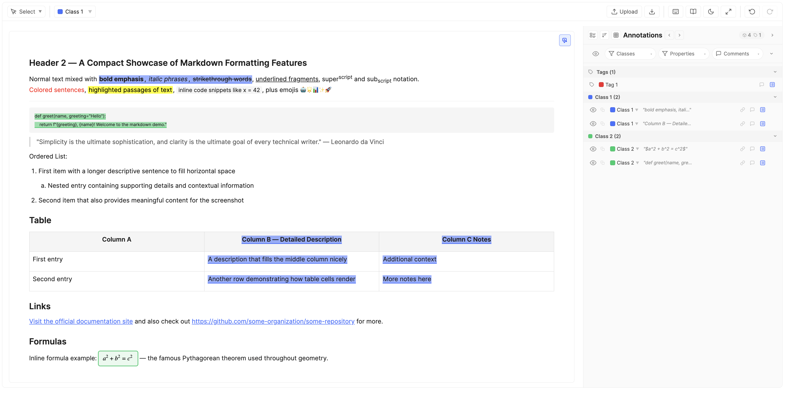
Key Capabilities
- Full rich-text editor — headings, lists, tables, code blocks, links, images, math, task lists, and more, powered by Tiptap. Text Editor Toolbar →
- NER annotation — select any span of text, assign a class, and capture structured data against it. Annotation Mode → · NER Instance Concept →
- Two content models — author text directly in the tool, or link an external document that stays read-only. Content Management →
- Multi-file items — a single item can hold multiple text files, each with its own content and annotations. Navigate between files via tabs or the Split View. Multi-File Items →
- Classes, tags, and properties — define the exact annotation schema your model needs, with per-class properties, item-level tags, and per-role visibility rules. Classes & Tags → · Properties →
- AI-assisted properties — connect an OpenAI / Gemini / Anthropic proxy and auto-fill property values from the span and document context. AI Autofill →
- Three tool modes per role — Edit Mode (full editor), Annotation Mode (NER-focused), and View-Only Mode. Configured per role; no code changes. Tool Modes →
- Relationships & comments — link annotations together using admin-defined relationships; leave scoped comments directly on instances. Relationships → · Comments →
- Paste-score & content-length — measure paste-vs-typed ratio and track document length limits in real time. Paste-Score →
- JSONL bulk ingest / ZIP export — load datasets at the platform level via JSONL and export per-item annotations as a ZIP with full structure preserved. Import → · Export →
- Continuous auto-save — no save button to forget; annotations and edits persist as you work. Auto-Save →
How It Works
The tool has two runtime modes, keeping setup separate from annotation:
- Configuration mode — An admin defines classes, tags, properties, tool-mode assignments, feature toggles, the AI proxy, and role-based instructions. This schema determines what every annotator sees and can do.
- Working mode — Users open items and either write / annotate text. The experience adapts to their role's Tool Mode. Everything auto-saves.
Typical flow: admin configures the project → items arrive (authored or linked) → annotators work → export annotations for model training or analysis.
First NER Annotation
- Open an item in the editor.
- Pick a class from the dropdown (or press 1–9 for the first nine classes).
- Select a text span with your cursor.
- The span is now an NER instance — it shows up in the annotation panel on the right.
- Fill any properties the class defines, or let AI autofill run them if configured for specific properties.
- Move on. Everything auto-saves as you go.
Walkthrough video
Short screen recording: selecting a span, picking a class, filling a property, and watching the annotation land in the panel.
Configuration
Configuration defines the labeling schema and the experience each role gets — what users can see, do, and capture. A well-designed configuration is the single most impactful step before annotation begins.
Access Control
Access Control is a set of per-feature role allow-lists. Each control gates a separate capability:
- Upload Files — which roles can use the in-editor upload button.
- Download Annotations — which roles see the Download button.
- Annotation Isolation — when on, by default each user only sees their own annotations; the Bypass role list lets specific roles see everyone's work. See Annotation Isolation.
Each list is a strict allow-list: only the listed roles get the capability. An empty list means no one — leaving everything blank locks the feature down rather than opening it up. Defaults are conservative; Upload and Download default to admin-only.
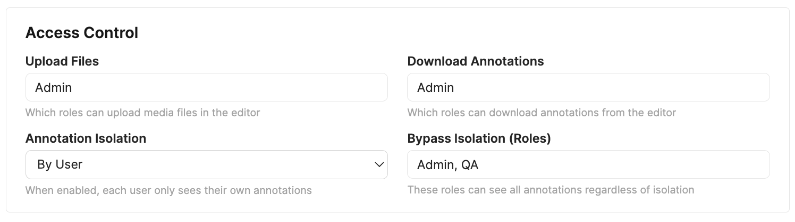
Tool Modes
Tool Modes determine how each role experiences the editor. Each project role is mapped to exactly one mode through a single-select dropdown. There are four modes:
| Mode | What the user sees | Typical use |
|---|---|---|
| Editor | The full rich-text editor with every authoring control. This is the default for every role. | Content authors writing or editing source text. |
| Annotation | A focused NER interface: text is read-only, classes and properties are front-and-centre, the authoring toolbar is suppressed. | Annotators labelling spans without accidentally altering content. |
| View Only | Read-only version of the current content — no editing, no annotating, no property changes. | Reviewers, stakeholders, auditors. |
| Model Arena | A dedicated workspace for generating side-by-side conversations against several AI models from one shared prompt. See Model Arena Mode in the editor and Model Arena Settings below. | Building multi-model comparison datasets / preference data. |
Role-Mode Mapping
Click Mode selector… to open the Tool Role-Mode Mapping modal. It lists every project role (Admin always at the top, then your workflow roles, fetched live) with a single-select dropdown per row. Every role defaults to Editor; switch the dropdown to View Only, Annotation, or Model Arena as needed. Because each role resolves to one mode, a role can never fall into an ambiguous or unassigned state.
- Admin is just another role — it can be assigned any mode (including View Only or Annotation), exactly like the rest.
- Automatic migration — projects created under the old two-list model are migrated on first open: roles previously in the Annotation or View-Only lists keep that mode, and everything else becomes Editor. No manual re-entry is needed.
The same card also hosts the Text Editor Options and Model Arena launchers, so the entire per-role experience is configured from one place.

Model Arena Settings
Opened from the Configure Model Arena… button in the Tool Modes card, this modal defines the model pool and behaviour for every role mapped to the Model Arena mode. The settings are project-wide; individual items "freeze" their slice of the pool the first time a prompt is sent (see States & Retirement).
Model pool
Configure up to 20 proxy + model combinations. Each row pairs an AI proxy with one of that provider's models, using the same dropdown design as AI Property extraction — but the arena keeps its own independent list. Rows can be drag-reordered; only rows with both a proxy and a model selected count as "complete" and become eligible for items.
Behaviour
- Models per item (1–4, capped at the pool size) — how many models from the pool each item actually uses. Each item draws this many models at random from the complete pool, so a 12-model pool with "Models per item = 3" spreads coverage across many items while keeping each item to a manageable three-way comparison.
- Turn limit (1–50, default 50) — the maximum number of prompt rounds an item accepts. Once reached, the prompt area is replaced by a "Turn limit reached" notice; existing conversations stay viewable.
- Randomize model order (On / Off, default On) — when on, each item shuffles which model maps to which conversation, and the conversations are named uniformly (Conversation 1, 2, …) so the annotator can't tell which model produced which transcript. Useful for blind preference rating. When off, conversations still use the same uniform names but follow the pool order.
- Allow conversation editing (On / Off, default Off) — when on, each conversation card gains an Edit button so an arena user can manually correct a transcript in the full editor. When off, transcripts are generation-only.

Feature Control
Feature Control toggles NER-side capabilities. Turning a feature off hides every affordance for it across the editor.
- Object Comments (Off / On) — enables comments on instances. When on, sub-controls appear for which roles can resolve and which can delete comments.
- Instance Relationships (Off / On) — enables relationships between instances. When on, a Relationship Types editor appears so admins can curate the relationship taxonomy. Relationship type names must be unique (case-insensitive); duplicate or empty names are silently reverted on blur.
- Annotation Panel — controls which views of the annotation panel are available: Instance + Table, Instance only, Table only, or None. The adjacent Configure Annotation Panel button becomes active whenever the panel is enabled (any mode other than None); the Table Column Settings button further activates when the table view is specifically reachable (Instance + Table or Table only).
- Default Split View (Off / Split View 2 / 3 / 4) — for items with more than one text file, opens the editor directly in catalog split view instead of the single viewport (Editor, View Only, and Annotation modes only — Model Arena keeps its own forced split). If the item has fewer text files than the configured column count, the largest fitting split is used. Single-file items always open normally. Best suited to comparison workflows where every item has the same small text-file count.
- Fullscreen on First Interaction (Off / On) — the first pointer interaction inside the editor requests fullscreen (browsers cannot enter fullscreen without a user gesture). Applies once per editor mount; annotators can exit with Esc or the toolbar button and are not forced again until the next item load. A brief informational notice confirms when fullscreen was triggered by this setting.
- Text Editor Options — opens the Text Editor settings/features modal (see Text Editor Options below).

Annotation Panel Settings
Click Configure Annotation Panel… to set the project-wide defaults that apply when an editor is first opened. Each control commits live — Done simply closes the modal and Restore to Default clears every setting in this modal back to the built-in baseline. Editors can still resize, regroup, or reorder per-session from the panel header; this modal only controls what they start with.
- Default panel width. Optional percentage (between 20% and 75% of the editor's container width) used as the starting width of the annotation panel. Out-of-range values snap to the closest valid percentage; leave the field blank to fall back to the built-in default of 480 px. Once an annotator drags the resize handle in the editor, their per-session width takes over until they reload.
- Default Group By. Initial grouping mode for the panel (Text Name, Class Name, Tool Type, or any project property). Property options are gathered from every regular and tag class. If the chosen property has 100 or more distinct values across the open item, the editor falls back to Text Name grouping for that session — the configured selection re-engages automatically once the dataset shrinks below 100.
- Default Order By. Initial ordering of instances (JSON Export, Class Name, Tool Type, Created By, Creator Role, Created At, or any project property). Drag-to-reorder in the panel only writes to the JSON-export order, so it is only available when Group By is set to Text Name and Order By is set to JSON Export — either as project default or at the per-session level.
Reset chevron in the editor. Each Group By / Order By dropdown in the editor has a small reset arrow next to its title to revert to config-selected defaults.
Table Column Settings
Click Configure columns & groups… to open a two-panel modal that controls the Table View columns for the whole project.
Left panel — Columns. Lists every column currently available (excluding role-hidden ones). Drag rows to reorder; uncheck Show to hide a column by default; click the pin icon on the right of each row to pin a column to the leading edge of the table. Changes are saved immediately — Done simply closes the modal. Restore to Default clears all column, group, and pin overrides.
Pinned columns. Pinning glues a column to the leading edge of the Table View: the rest of the table scrolls horizontally underneath while pinned columns stay in place. Pinned columns always render before any unpinned column, in the order you set in this modal — drag-reordering only swaps positions within the same cluster (pinned ↔ pinned, or unpinned ↔ unpinned), so the only way to move a column between clusters is the pin button itself. Pin state is independent of Show: a column can be pinned but hidden by default (its pin icon dims to signal the dormant state), and the pin reactivates the next time the column or its owning group is shown.
Right panel — Column Groups. Groups let you bundle related columns so editors can show or hide them all at once with a single toggle chip in the Table View. Click + Add Group to create a group, give it a short label, and pick columns from the dropdown. Group labels must be unique (case-insensitive); duplicate or empty labels are silently reverted. Each column can belong to at most one group. Columns assigned to a group have their individual Show checkbox controlled by the group's visibility toggle. Empty groups (no columns selected) are automatically removed when the modal closes.
- Per-session user adjustments. Annotators keep their existing per-session control via the Columns dropdown and the column group chips — their adjustments don't persist across reloads; the project default does.
- New columns appear at the end, visible. Adding a new property or relationship type after configuring defaults appends it visible. Reopen the modal to reposition or hide it.
- Stale entries keep their position. Removing a column source (e.g. toggling Comments off) doesn't drop its stored position — it returns to the same spot if re-enabled later.
Classes & Tags
Classes and tags together form the structured vocabulary of your project. Classes describe what individual spans are; tags describe what the document as a whole is about.
Classes
A class is what a user assigns to a text span in Annotation Mode. Each class has:
- Name — the label shown in the class picker and the annotation panel.
- Color — the highlight colour used for spans of this class.
- Properties — the structured fields captured on each instance of this class (see Properties below).
Class names must be unique (case-insensitive); duplicate or empty names are silently reverted on blur. The first nine classes become number-key shortcuts (1–9) in the editor, so arrange your most-used classes first.
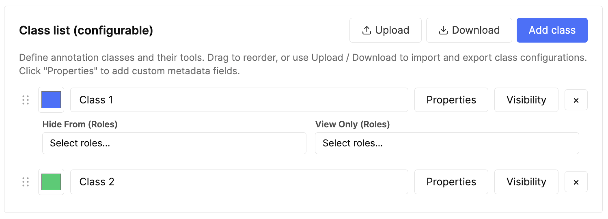
Tags
Tags capture structured attributes that describe something broader than a single span. There are two scopes:
- Item-level tags — apply to the whole item regardless of how many text files it contains. Think topic, language, domain, or any coarse attribute about the entire document set. Shown at the top of the annotation panel independently of the active file.
- Text-level tags — apply to a specific text file within the item. In multi-file items, each file can have its own text-level tags (e.g. per-file quality signals, per-file language, per-file domain). Shown under file sub-headers in the annotation panel.
Tag scope is configured per tag class in the admin settings. Tags are ideal for:
- Routing items through triage (e.g. "English", "Needs-Review").
- Capturing ground-truth for document-classification training.
- Filtering and grouping in dashboards downstream.
- Per-file quality or metadata signals (text-level scope).
Tag names must be unique (case-insensitive); duplicate or empty names are silently reverted on blur.

Properties
Raw spans only tell a model where the entity is. Properties attach structured metadata — text, options, numbers, AI-generated content — to each span, turning bare spans into rich training samples. Property names must be unique within their class or tag (case-insensitive); duplicate or empty names are silently reverted on blur. There are six property types:
| Type | What it captures | Example |
|---|---|---|
| Free Text | Open-ended string input. | Notes, normalised forms, IDs, canonical spellings. |
| AI Text | Text auto-filled by the configured AI proxy (or an optional per-property override) from the highlighted span and document context. A per-property default prompt guides the extraction. See AI Autofill. | Entity canonicalisation, short descriptions, disambiguation. |
| Select | Predefined option list. Toggle Allow multi-select to switch between dropdown (single) and checkbox (multi) behaviour. | Sentiment, polarity, multi-label classification, attribute tagging. |
| AI Select | Select field whose options are auto-chosen by the configured AI proxy (or an optional per-property override) from the span and document context. Combines a predefined option list with AI-driven pre-selection. A per-property default prompt guides the extraction. See AI Autofill. | Auto-classification, sentiment, topic categorisation, attribute tagging. |
| Numeric | Number input with optional min, max, step, and unit. | Confidence score, severity rating, count. |
| Approval | Three-state verdict captured via a compact thumbs-up / thumbs-down picker. Stores "true" when approved, "false" when disapproved, and is omitted (or set to blank) when no verdict has been given. Carries no options, no AI configuration, and no numeric or text-display options. | Reviewer sign-off, span-level QA verdict, accept/reject for an extracted entity. |
Common property options:
- Required — flags the instance as incomplete until filled.
- Text Display (Free Text and AI Text) — a three-way toggle that sets how the field is presented; the three modes are mutually exclusive:
- Inline (default) — a compact resizable textarea shown directly in the popover / table cell. Best for short values.
- Modal — opens a roomy plain-text modal that stores the value exactly as typed (no formatting, no conversion). Best for long or structured plain text — e.g. raw HTML, JSON, or multi-line snippets you need preserved verbatim.
- Rich Text — opens a rich-text modal with inline formatting, useful for longer values like detailed descriptions or multi-paragraph captions.
- Enable Editing (AI Text and AI Select) — controls whether the AI output is editable at extraction time. For AI Text, when off, the model auto-extracts using the predefined prompt as-is; when on, annotators can tweak the prompt before triggering extraction. For AI Select, when off, the model's chosen option is applied directly; when on, annotators can review and override the AI's selection.
- AI Text / AI Select: Default Prompt — the system prompt the model receives when extraction runs. Annotators with prompt editing enabled can also override it per-run from the Edit prompt flow.
- AI Text / AI Select: Proxy / Model override — optional per-property routing. By default each AI property inherits the project-wide AI Property Proxy and model. In the property card, use the Proxy/Model override row to send this property only through a different proxy and/or model tier. Overrides are included when you copy a property to other classes. See Per-property proxy & model routing.
- Default value (Select only) — a starting option auto-populated on each new instance.
- Hide From Roles / View-Only Roles — restrict who sees and edits this property.
- Info — optional helper text shown next to the field for annotator guidance.

Per-property proxy & model routing
Every AI Text and AI Select property can optionally override the project defaults set under AI Proxy. In the property modal, below the Default System Prompt, the Proxy/Model override row exposes two dropdowns:
- Proxy — starts at Default (project AI proxy / model). Pick any team proxy whose domain routes to OpenAI, Gemini, or Anthropic to override the project selection for this property only.
- Model — enabled once a non-default proxy is chosen. Lists the same three tiers as the project-level model picker for that provider (cheapest → most capable). Changing the override proxy resets the model to that provider's default middle tier.
At extraction time the editor routes each property through its resolved proxy + model. Properties sharing the same route are batched into one API call; properties with different overrides (or a mix of overrides and project defaults) run as separate batches in sequence. A property with an override can still extract when the project default is unset — but any property without an override still requires the project AI Property Proxy to be configured. The Ask AI documentation assistant always uses the project proxy/model; it does not read per-property overrides.
Property Visibility Rules
A property visibility rule controls whether an entire property is visible and editable on a given NER instance or tag, based on the value of one or more sibling Select / AI Select properties. Use this when a whole field only makes sense in a specific context — e.g. only show "Treatment Dose" when "Has Treatment" is "Yes", or only show "Sub-category" when "Category" is "Clinical". This is the property-scope equivalent of option visibility rules: option rules hide individual options inside a Select; property rules hide the whole property.
Property visibility rules can be set on any property type (not just Select / AI Select). A Free Text, Numeric, AI Text, AI Select, Select, or Approval property can all be gated by a rule. The controller must still be a sibling Select-like property in the same class or tag class.
Setting Up a Rule
- Open the property modal for a class or tag class.
- In the property card's right-hand header, click the chain icon next to the copy / delete buttons. The icon is only enabled when the class has at least one sibling Select-like property to use as a controller.
- An inline rule editor expands below the property card — same shape as the option-rule editor: choose All conditions match (AND) or Any condition matches (OR), then add one or more conditions picking a controller property and which value(s) it must hold.
- Click the chain icon again (or the editor's × / Remove rule button) to collapse / clear the rule.
The chain icon switches to a bolder blue tint when a rule is active, so you can spot rule-bearing properties at a glance in the property list.
Behavior in the Editor
- Greyed-out field — when the rule is unsatisfied, the property still appears in the popover and table column (so annotators can see the field exists), but it's rendered dimmed with a not-allowed cursor. Hovering anywhere over the disabled field shows a tooltip explaining what controls it (e.g. "Controlled by: Material = Wood").
- Stored value cleared — the moment a rule becomes unsatisfied (e.g. the user changes a controller value), any value stored on that property is automatically cleared. The clear cascades: if A controls B, and B itself controls C, changing A clears both B and C in one step.
- Required validation suppressed — an inaccessible property is not counted as "missing required" even when marked Required. The red required indicator on the NER / tag row only reactivates when the rule becomes satisfied and the field becomes editable again.
- AI extraction skipped — for AI Text / AI Select properties, the row-level Extract / Edit prompt controls, the per-property icons in the property popover, and the per-cell extract icons in the table skip any AI property whose rule is unsatisfied. The buttons appear / disappear immediately as the controller value changes, no popover reopen needed.
- Modal / Rich Text properties — a property gated by an unsatisfied rule renders as a plain "—" placeholder; its modal (plain-text or rich-text) cannot be opened.
- Default values disabled — when a Select property has a property visibility rule, the per-option "Default" checkboxes in the configuration screen are disabled. Defaults wouldn't make sense for a property that may not even be visible on instance creation; the configuration UI prevents the contradiction up-front.
For details on how property visibility rules interact with option visibility rules on the same property, see Property & Option Visibility Rules in the editor section.
Copying properties between classes
Most projects end up with the same property defined on several classes — a Canonical name AI Text on every entity class, a Confidence Numeric on a handful, a Polarity Single Select shared between two or three. Recreating each one by hand is tedious and error-prone. Every property row in the Properties modal has a small copy icon next to the remove (×) button that opens a picker for replicating that property across other classes and tags in one step.

The picker lists every class and tag in the project. Each row carries a state badge that tells you what will happen if you select it:
| Row state | Meaning | What you can do |
|---|---|---|
| Will add | The target has no property by this name. Safe paste. | Tick the row to include it. |
| Already identical — will skip | The target already has a property with the same name and the same shape (type, options, prompt, numeric range, etc.). Pasting would be a no-op. | Locked off — nothing to do. |
| Conflict: name exists with different shape | The target has a property with the same name but a different definition (e.g. it's a Free Text on one class and an AI Text on another). | Tick the row, then choose Overwrite property to replace the target's definition with the source's, or Add as duplicate to add a second property with a " (2)" suffix on its name. |
| Source — excluded | This is the class you're copying from. | Always excluded; you can't copy a property onto itself. |
The footer shows a running summary ("3 to add · 1 to overwrite · 2 already identical") and the Copy button only enables once at least one row is in the to-add / to-overwrite / to-duplicate set.

A few details worth knowing:
- Copies are independent. Each paste mints a fresh property ID — there's no hidden link back to the source. Editing the original later does not propagate to the copies, and vice versa. Think of this as a faster "create the same property again" rather than a shared definition. The editor's table view and panel still aggregate properties across classes by name, so a Canonical name column will show every class's instance regardless of which class it was originally created on.
- Role visibility — the Copy role visibility (Hide From / View Only) checkbox at the top of the modal controls whether the source property's role rules travel with the copy. Turn it off when target classes have their own role-restriction conventions you don't want to overwrite. On the Overwrite property path, the target's existing role visibility is preserved when this option is off.
- AI Text / AI Select on tag classes — AI Text and AI Select properties are supported on text-level tag classes (and normal annotation classes), but not on item-level tag classes. When copying an AI Text property into an item-level tag, it is automatically downgraded to Free Text; when copying an AI Select property into an item-level tag, it is automatically downgraded to plain Select. In both cases the default prompt and "Enable Editing" setting are dropped, and the picker row flags this with a small note. For text-level tags, AI Text and AI Select are preserved and the extraction runs against the relevant text file's content.
- Overwrite is destructive on the target's definition. Annotators' stored values for the property remain wired to the same row (the property's ID is preserved), but the type, options, and other settings switch to the source's. If a stored value no longer matches the new shape (e.g. an option that was removed from a Single Select), the destructive-warnings banner in the Properties modal will flag it at publish time.
- Visibility rules — by name + shape match. If the source property carries any option visibility rules or a property visibility rule, the copy tool tries to remap each rule's controller references against the target class's properties. For a rule to carry through, every controller it references must exist in the target by name (case-insensitive) and the target controller's option list must contain every value the rule references. If even one condition cannot be remapped, the entire rule is dropped on that target — partial remapping is refused because keeping a "best-effort" subset of an "all conditions match" rule would silently weaken it. The modal stays quiet on success and only surfaces a per-target warning when one or more rules will actually be dropped, so you can spot the targets where shape divergence matters before confirming.
Option Visibility Rules
When a class or tag has multiple Select properties, you can create dependencies between them. An option visibility rule makes one property's options conditionally visible based on what is selected in another property of the same class/tag. This lets you build hierarchical relationships — for example only showing relevant subcategory options when a particular category is selected.
Option visibility rules apply to Select and AI Select properties alike. An AI Select property can be a controller or a dependent in a rule chain — the AI pre-selection respects the same filtering, and cascade clearing applies to AI-chosen values exactly as it does to manual ones.
When to Use
- Category → Subcategory — A "Category" property has 5 options; a "Subcategory" property has 20 options. Instead of showing all 20 regardless, you configure each subcategory option to only appear when its parent category is selected.
- Conditional attributes — A "Sentiment" dropdown controls which "Reason" options are relevant.
- Multi-level filtering — Rules can reference multiple controller properties and combine with AND/OR logic for complex taxonomies.
Key Concepts
| Term | Meaning |
|---|---|
| Controller property | The Select property whose value determines what options appear on the dependent property. Must be a sibling (in the same class or tag class). |
| Dependent property | The Select property whose options are conditionally shown/hidden based on the controller's value. |
| Visibility rule | A per-option configuration that says "only show this option when condition X is met on the controller". |
| Unconditional option | An option with no visibility rule — always shown regardless of what the controller says. This is the default. |
Setting Up a Rule (Configuration Screen)
- Open the property modal for a class or tag class.
- On any Select property that has at least one sibling Select property, each option row shows a chain icon (⛓).
- Click the chain icon on the option you want to make conditional. The inline Visibility Rule Editor expands below that option.
- Click + Add condition. Choose the controller property from the dropdown, then select which of the controller's option values must be active for this option to be visible.
- For multi-condition rules, choose All (AND) or Any (OR) at the top to control how conditions combine.
- When done, click the collapse arrow or click the chain icon again to close the editor.

Rule Logic
- Single-select controller — The condition passes if the controller's stored value is any one of the listed values (implicit OR across the selected values in the rule picker).
- Multi-select controller — You choose any (at least one of the listed values is selected) or all (every listed value must be selected).
- Multiple conditions — Combined with a top-level All (every condition must pass) or Any (at least one must pass).
- Empty controller — An empty/blank controller value always counts as "unsatisfied" — the dependent option stays hidden.
Behavior in the Editor
Once rules are published, annotators see them enforced immediately in both the property popover and the table view:
- Option filtering — The dependent property's dropdown only shows options whose rule is currently satisfied by the controller's value on that same row (NER instance or tag).
- Cascade clearing — If the annotator changes the controller value and a previously-selected dependent option is no longer valid, it is automatically cleared. This cascades: if A controls B and B controls C, changing A can clear both B and C in one step.
- Controller indicator — Dependent properties show a small chain icon on their label with a tooltip listing which properties control their options (e.g. "Options here are filtered by: Category, Region").
- Config-triggered cleanup — If an admin changes rules after annotations already exist, the next time an annotator opens an item, any stored values that violate the new rules are cleaned in memory. The cleanup persists on the annotator's next save.

Interaction with Default Values
Default values and visibility rules are mutually exclusive on the same option. An option marked as Default cannot have a visibility rule, and vice versa. The configuration UI enforces this:
- If "Default" is checked on an option, the chain icon is disabled (tooltip explains why).
- If a visibility rule exists on an option, the Default checkbox is disabled.
This prevents the scenario where a default value would be immediately cascade-cleared on instance creation because its rule isn't satisfied.
Cross-Property Copy
When copying a property that has visibility rules to another class, the copy tool attempts to remap each rule's controller references against the target class's properties. For a rule to carry through, every controller referenced by its conditions must exist in the target by name (case-insensitive) and the target controller's option list must contain every value the rule references. If even one condition can't be remapped, the entire rule is dropped on that target — partial remapping is refused because silently dropping conditions from an "all conditions match" rule would weaken its logic (e.g. A AND B collapsing to just A).
The copy modal stays quiet when every rule carries through cleanly, and surfaces a per-target warning only on targets where one or more rules will be dropped. The same name + shape check applies whether the rule is a per-option rule on this property or a property-level visibility rule. See Copying properties between classes for the full copy flow.
Broken References
If a controller property is deleted or its type is changed away from Select while a dependent still references it, the condition is shown with a red border and alert icon in the configuration screen. The broken condition is preserved during the config session so admins can see what happened. On publish, broken conditions are automatically stripped.

Text Editor Options
Opened from the Feature Control section, the Text Editor Options modal has two tabs — Settings and Features.
Settings
Project-level rules that apply to every item:
- Editor Layout — fixed height, auto-grow, or full-page layout.
- Height / Max height — conditional inputs that appear for fixed and auto layouts.
- Paste Score Visibility — role allow-list controlling who sees the paste-score chip in the editor footer. Default is "no one".
- Content Length Limit — None, by character, or by word; with optional
min/maxbounds. See Content Length.
Features
A grid of toggles for individual rich-text features, grouped by category:
- Headings — H1, H2, H3.
- Inline formatting — bold, italic, underline, strikethrough, subscript, superscript, text color, highlight.
- Alignment — left, center, right, justify.
- Lists — bullet, ordered, task, indent.
- Blocks — inline code, code block, blockquote.
- Inserts — link, emoji, image (with configurable max size), math, horizontal line, hard break, table.
Select all / Deselect all shortcuts at the top.
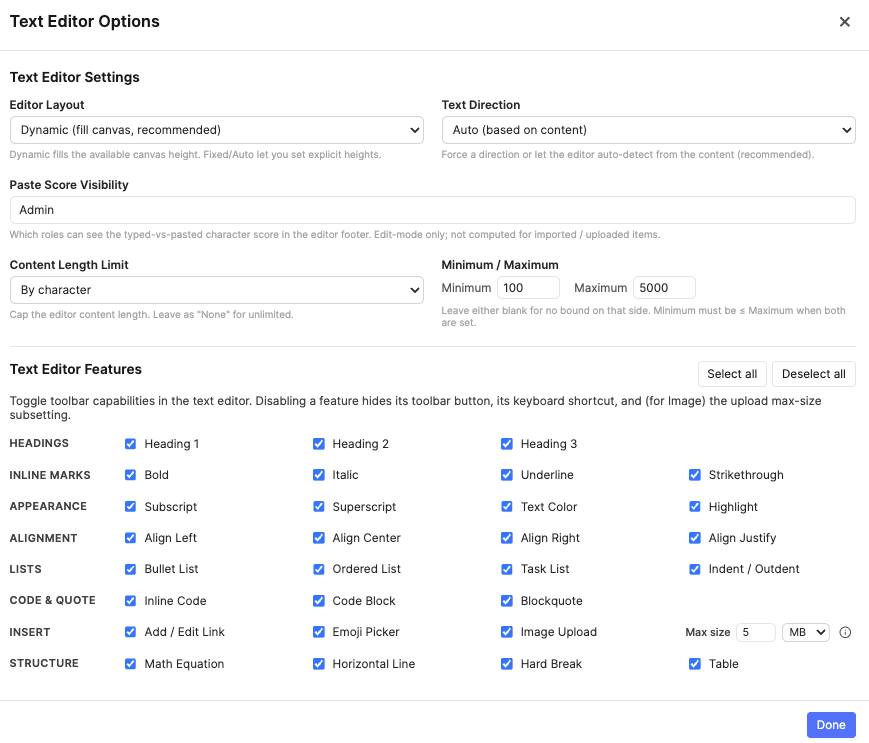
AI Proxy
All AI features in this tool — AI Text and AI Select autofill and the documentation Ask AI assistant — communicate with external providers (OpenAI, Gemini, Anthropic) through a SuperAnnotate Proxy. Proxies act as secure intermediaries: your team's API keys live in SuperAnnotate, never in the browser.
Why proxies?
- Security — API keys stay server-side. Annotators never see or handle raw keys.
- Central management — Team admins create and rotate proxies in one place; all projects inherit the change.
- Audit & control — Proxy usage is logged per team, making cost tracking and rate limiting easy.
Step 1 — Create a proxy in SuperAnnotate
- Open SuperAnnotate → Team Settings → Security → Proxies.
- Click Create Proxy. Give it a descriptive name (e.g. "OpenAI Proxy").
- Under Secrets, add a header:
Provider Header key Header value OpenAI authorizationBearer sk-proj-…Anthropic x-api-keysk-ant-…Gemini x-goog-api-keyAIza… - Save the proxy and note its name — you'll select it in the next step.
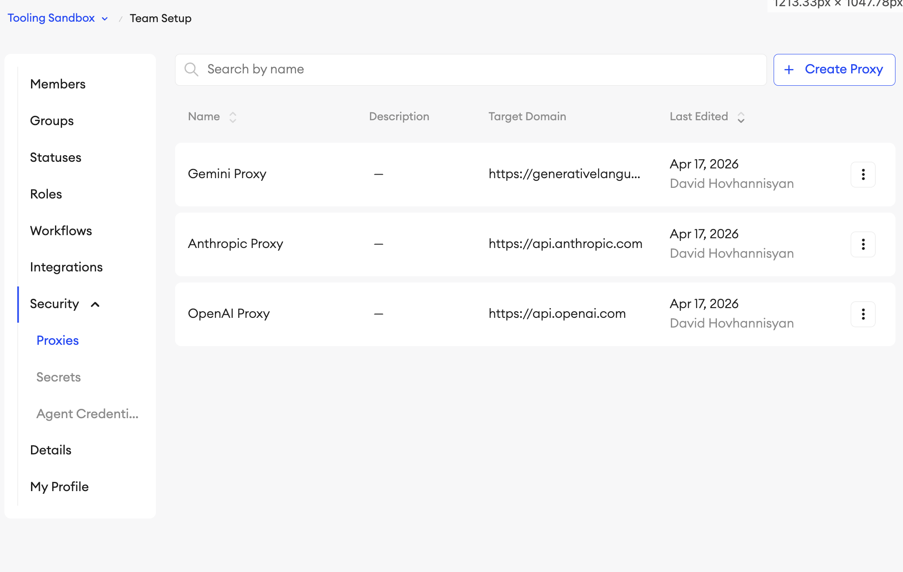
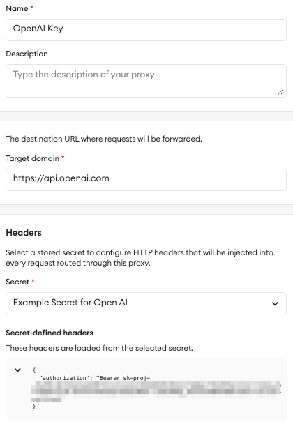
Step 2 — Select the proxy in configuration
In the configuration screen's AI Property Proxy card, open the Select Proxy dropdown and pick the proxy you created. This proxy powers both AI Text and AI Select property autofill. The dropdown is populated from your team's available proxies. A provider badge (OpenAI / Gemini / Anthropic) appears once a proxy is selected.
Once a proxy is selected, a Model dropdown appears next to it. Three models are offered for each provider, sorted from cheapest/fastest to most capable — the middle option is selected by default. The currently available models are:
| Provider | Models (cheapest → most capable) |
|---|---|
| OpenAI | gpt-5.4-nano, gpt-5.4-mini, gpt-5.5 |
| Gemini | gemini-3.1-flash-lite, gemini-3.5-flash, gemini-3.1-pro-preview |
| Anthropic | claude-haiku-4-5, claude-sonnet-4-6, claude-opus-4-7 |
Changing the proxy to a different provider resets the model to that provider's default (middle tier). The selected model applies to both text-based property extraction and the Ask AI assistant — annotators in the editor are not affected and do not see which model is active, except when a property has its own proxy/model override.
Bulk annotation panel extraction toggle
Below the AI Property Proxy card, the checkbox Allow Bulk Extraction of all AI Properties controls whether annotators see the panel-header bulk extract control in the editor (see Bulk annotation panel extraction). It is off by default — enable it when you want annotators to run AI extraction across every visible row in the annotation panel in one action. The toggle does not change single-property, row-level, or table-cell extract controls; it only exposes the all-rows shortcut. Works in both Instance View and Table View. Requires an AI Property Proxy to be configured (or at least one AI property with a per-property override and runnable empty values).

Troubleshooting
- "No team available" — the component could not detect your team. Make sure it's loaded inside the SuperAnnotate platform.
- "Failed to load proxies" — network error fetching the proxy list. Refresh and retry.
- "AI Property Proxy is not configured" at runtime — return to configuration and pick a proxy.
- Errors from the model itself — verify the API key on your provider's side (OpenAI, Anthropic, or Gemini dashboard) — that it's valid, not revoked, and has remaining quota / billing in good standing.
See API Rate Limits for guidance when running autofill across large datasets.
Project Instructions
Project Instructions are PDF guidance documents attached per role. Each role can have its own PDF, so annotators and QAs see the instructions relevant to their job. Admins can see and manage all instruction files.
- Upload one PDF per role — annotation conventions, edge cases, examples.
- Change any time — users pick up the new file on next load.
- The PDF is opened from the editor toolbar's Instructions button (when configured).
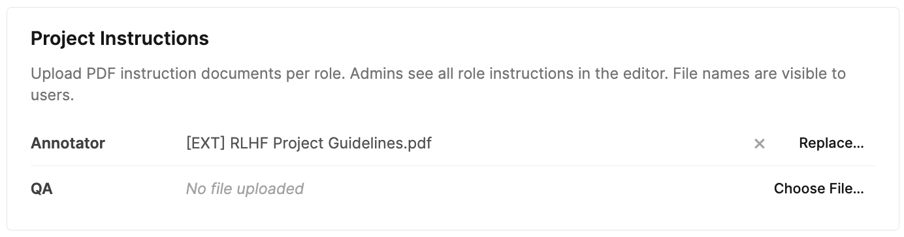
Item Context
Item Context adds an optional strip of rich-text slots above the editor canvas. Use it for per-item system prompts, task-specific notes, or short instructions that arrive with the item or are written by annotators in the editor. Slot content supports the same rich text formatting as rich-text properties (bold, italic, headings, lists, blockquotes, code, links, and tables). Off by default; toggle it on from the Item Context card and click Configure slots… to manage the slot list.
- 1–10 slots per project — each one becomes a tab in the editor's Item Context section. Add slots with the + Add slot button; drag the handle to reorder; click the × to delete.
- Stable internal id — every slot gets an opaque id (e.g.
ctx-abc123) at creation. Renaming or reordering a slot in config never moves stored item data; values stay attached to the same id forever. The id is also exposed in name2id.json so JSONL authors can address slots by name on upload. - Unique slot names — names must be unique per project (case-insensitive), same rule as classes and tags.
- Per-role visibility — each slot has independent Hide From and View Only role pickers (same widget as class and tag visibility). Defaults for new slots are Hide From: No one and View Only: All Roles — i.e. visible read-only to everyone until admin opts a role into editing. If a role is on both lists, Hide From wins.
- Default section height — admin sets the initial height of the strip in the editor (100–500 px, default 200 px). Annotators can drag-resize it for their session, but resized values are not persisted — every reload starts at the admin default.
- Disabling is non-destructive — toggling Item Context off keeps the configured slots and any per-item values on disk; turning it back on later restores everything as it was.
- Deleting a slot leaves prior values on disk as orphans — they no longer appear in the editor but ride through subsequent saves and downloads. Adding a new slot later generates a fresh id; orphan values do not reattach automatically.
- Minimum one slot when enabled — the last slot can't be deleted while the feature is on. Disable Item Context to clear the strip entirely.

Import / Export
The whole configuration — classes, tags, properties, tool modes, access control, feature toggles, AI proxy selection — can be exported as a single JSON file and re-imported into another project.
- Export — downloads
text-editor-tool-config-YYYY-MM-DD.jsonwith the full schema. Version-control it alongside your project code for reproducibility. - Import — reads a previously exported config JSON and replaces the current configuration. A confirmation prompt is shown first.
- Use this to clone a proven configuration across projects, back up before a risky change, or share a template with another team.
The header also includes a Download name2id.json button that exports the name-to-ID mapping file directly from the config screen. This is the same name2id.json included in annotation ZIP downloads, but available here so admins can obtain it without creating items or entering the editor — useful when preparing JSONL imports or integrating with external pipelines.

Editor
The editor is where the actual work happens — authoring content, annotating spans, reviewing output, or generating multi-model conversations in Model Arena. Its layout adapts to the user's Tool Mode and keeps the content front-and-centre while surfacing the right controls for the task at hand.
Editor Layout
Three regions, each with a purpose:
- Top toolbar — project-level actions: tool / class selectors (Annotation Mode), upload, download, keyboard shortcuts, documentation, dark-mode toggle, fullscreen, undo / redo.
- Center content area — the document itself. In Edit Mode this is a full rich-text editor; in Annotation / View-Only modes it renders as read-only formatted text.
- Right annotation panel — the list of NER instances with search, grouping, filtering, and quick access to properties, comments, and relationships. Can be collapsed.
Layout Modes
The top toolbar exposes three layout conveniences:
- Fullscreen (F) — maximises the tool area within its host page to reduce visual clutter.
- Dark mode toggle — flips the UI to a dark palette. The same preference automatically applies to this documentation.
- Panel collapse / resize — in Annotation Mode, the right annotation panel can be collapsed or resized as needed. (The panel isn't shown in Edit or View-Only modes.)
Tool Modes in Layout
Layout adapts to the Tool Mode your role resolves to:
| Mode | Top toolbar | Content area | Annotation panel |
|---|---|---|---|
| Editor | Authoring toolbar visible; no tool/class selectors | Fully editable rich text (linked files still read-only) | Hidden by default |
| Annotation | Tool / class selectors visible; authoring toolbar hidden | Read-only, selectable for span creation | Primary surface — instance list, properties, comments, relationships |
| View Only | Read-only — no tool / class selectors, no upload | Read-only display | Hidden |
| Model Arena | Read-only top toolbar; upload / file-creation suppressed | Conversation cards in a forced split view plus a shared prompt dock | Hidden |
See Model Arena Mode for the dedicated workspace.
Edit Mode:
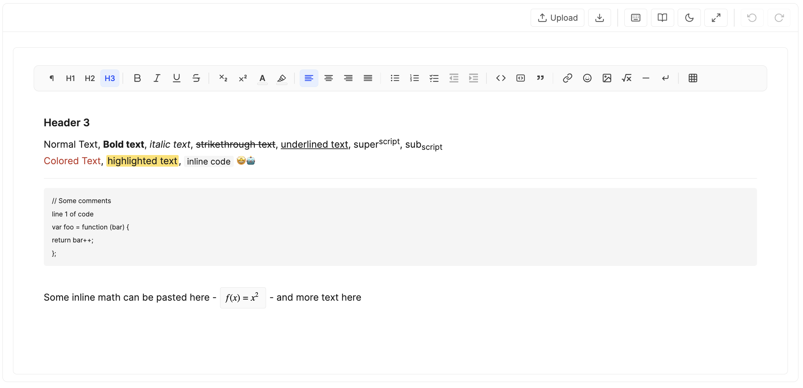
View Only Mode:
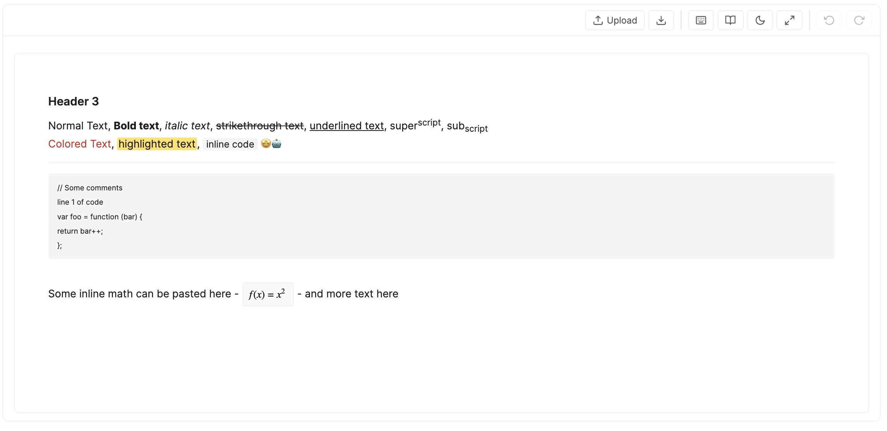
Annotation Mode:
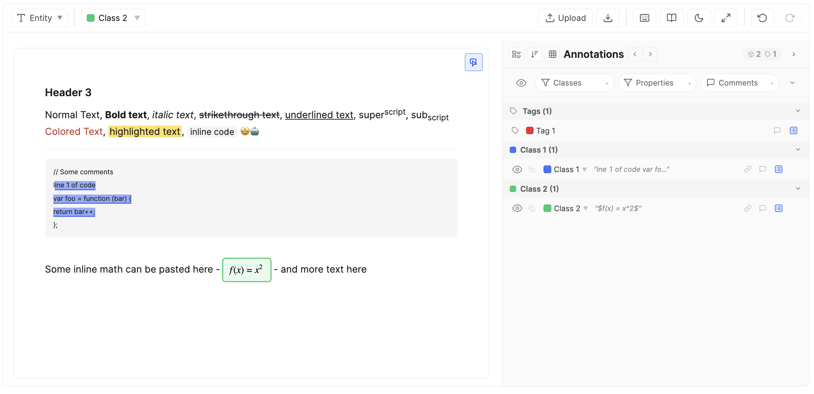
Model Arena Mode:

Content Management
This tool supports two content models: content you author inside the tool, and content that's linked in from elsewhere. They behave differently at the editor level — mostly around what's editable.
Authored Content
Authored files start empty (or pre-loaded from JSONL) and are written directly in the editor. They are:
- Fully editable in Edit Mode — every authoring control allowed by Text Editor Options → Features is available.
- Locked for text edits in Annotation Mode but still annotatable — annotators highlight spans and fill properties.
- Continuously persisted via auto-save; no save button needed.

Linked Content
Linked files bring in text that originates somewhere else — a URL, or inline immutable Markdown / plain text shipped with the JSONL. They are:
- Read-only for text — the body cannot be edited even in Edit Mode. Linked content preserves a source of truth.
- Fully annotatable — spans, properties, tags, comments, and relationships work the same way as for authored files.
- Identified — in Edit Mode only — by a lock-icon banner at the top of the content area explaining why the body cannot be edited. In Annotation Mode the banner is suppressed (read-only is the default behaviour anyway, so the banner would be noise).

In-Editor Upload
When the user's role is on the Upload Files allow-list, the Upload button in the top toolbar opens the upload modal. The modal has two functions:
- Upload new files — drag or browse for
.txtand.mdfiles. Each uploaded file becomes a new text tab in the item. Multiple files can be uploaded at once. - Create blank file — adds an empty text tab ready for authoring.
This is distinct from the canvas dropzone that appears when a text tab is currently empty (no content). Dropping a file onto the canvas dropzone replaces the current tab's content rather than creating a new tab.
Linked tabs and the two upload paths. Linked vs. authored is decided per texts[i] entry, not per item — a single item can mix linked and authored tabs freely.
- The canvas dropzone (replace-current-tab) only surfaces on empty authored tabs. Linked tabs already carry a fixed external body, so there's nothing to replace — the dropzone doesn't render on them.
- The toolbar Upload modal (add new tabs) is purely additive — it appends new authored tabs to the item without touching any existing tab. It works regardless of whether the currently active tab is linked or authored, as long as the item is under the
MAX_TEXT_FILEScap.
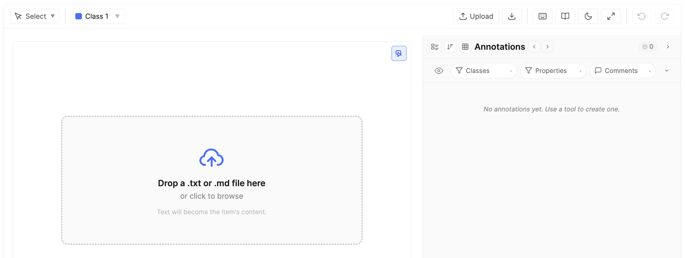
JSONL Upload
Bulk JSONL upload happens at the SuperAnnotate platform level, not from inside the editor — admins upload a JSONL dataset to a project and the platform creates one item per line. Each line is read by the host, and the editor receives the matching data.text_editor_tool.value payload when an item is opened. See Import / Export → JSONL Import for the full payload schema.
Multi-File Items
A single item can contain multiple text files (up to 25 visible). Each file has its own content, NER instances, text-level tags, and statistics. This mirrors the image-annotation-tool's multi-image support.
Tab Navigation
When an item has more than one text file, a tab strip appears above the canvas. Click any tab to switch the active file. The active file's content fills the editor canvas; its instances and text-level tags appear in the annotation panel.
- Red dot indicator — tabs where the file's content violates the configured Content Length Limit (below minimum or above maximum) display a small red dot next to the file name.
- Adding files — use the Upload button to add new files or create blank tabs.
- Per-file undo — each tab maintains its own undo/redo stack. Switching tabs resets the undo history to the new file's state.
Panel & Annotations
The annotation panel aggregates annotations across all files in the item. NER instances from every file are shown regardless of which tab is active. Clicking an instance from another file switches the active tab to that file and scrolls to the span. The panel groups text-level tags under file sub-headers, while item-level tags appear at the top independently.
Item Context
When Item Context is enabled in the project configuration, the editor renders a dedicated section at the very top of the canvas — above the multi-file tab strip and the content area — for the configured slots.
- Tab strip — one tab per visible slot, in the order set in config. The active tab uses a neutral grey accent stripe so it's clearly distinguishable from the blue file-tab strip directly below.
- Collapse / expand — a chevron button on the leading edge of the tab strip collapses the section down to just the tab row (hiding toolbar, content, and resize handle). The chevron stays sticky-left so it remains visible even when many slots overflow the strip and the tabs scroll horizontally underneath it. When collapsed, clicking the chevron, the active tab, or any non-tab area in the strip expands the section without changing slots; clicking a different (non-active) tab expands and switches to that slot in a single click. Always starts expanded on load.
- Rich text editing — editable slots show a formatting toolbar between the tabs and content area. Available formatting: bold, italic, headings (H1/H2), bullet lists, numbered lists, blockquotes, inline code, code blocks, hyperlinks, and tables. The toolbar sits within the section's height and does not consume additional space.
- Read-only slots — slots set to View Only for the user's role render with a light grey background and no toolbar. Rich text content still renders fully formatted (headings, lists, tables, etc.) — only editing is disabled.
- Hidden slots — slots with the user's role on the Hide From list are not shown in the strip at all. If every slot is hidden for the user, the entire Item Context section disappears.
- Resize handle — drag the thin grey grip at the bottom of the section to resize it (clamped between roughly 80 px and 50 % of the editor height). The resized height is session-only; reloading the item resets to the admin's default height.
- Autosave — edits feed the same debounced auto-save pipeline as the rest of the editor; the unsaved-changes indicator picks them up like any other change.
- Source of values — slot content is either typed directly by the annotator or pre-populated when the item arrives via JSONL upload (see the payload schema).

Split View
For items with multiple text files, the Split View toggle (between the Download and Shortcuts buttons on the top toolbar) shows multiple files side-by-side as read-only previews. Options:
- Split 0 (default) — standard single-file editable view with tabs.
- Split 1 / 2 / 3 — displays that many files in a grid layout. All panes are non-editable read-only renders (formatted content, NER highlights, math equations visible but not interactive). The tab strip and formatting toolbar are hidden.
Behaviour:
- The toggle only appears when the item has more than one text file.
- Clicking a pane collapses back to Split 0 and switches the active file to the clicked pane's file.
- Selecting an annotation (from the panel or table) while in split view does not collapse the view. Instead, the corresponding file's pane is scrolled into view and briefly highlighted.
Top Toolbar
Left to right, the top toolbar exposes project-level actions:
- Tool selector (Annotation Mode only) — pick between Select (free cursor) and Entity (annotation drawing). Required before creating an annotation.
- Class selector (Annotation Mode only) — pick the active class for new spans.
- Upload — opens the upload modal (when allowed).
- Download — exports the current item as a ZIP (when allowed). See Download / Export.
- Instructions — opens the Project Instructions PDF for the user's role (when uploaded).
- Split View (multi-file items only) — toggles between Split 0/1/2/3. See Split View.
- Keyboard shortcuts — opens the in-app cheat sheet.
- Documentation — opens this panel.
- Dark mode — toggles the UI palette.
- Fullscreen (F) — expands the tool within its host.
- Undo / Redo — see Undo / Redo.

Text Editor Toolbar
In Edit Mode, a second toolbar row — the text editor toolbar — appears beneath the top toolbar. This is where all authoring controls live. Which buttons are present is governed by the Text Editor Options → Features toggles, grouped the same way:
- Headings — H1, H2, H3.
- Inline formatting — bold, italic, underline, strikethrough, subscript, superscript, text color, highlight.
- Alignment — left, center, right, justify.
- Lists — bullet, ordered, task, indent.
- Blocks — inline code, code block, blockquote.
- Inserts — link, emoji, image (with configurable max size), math, horizontal line, hard break, table.
Features disabled in configuration are hidden entirely — no greyed-out button noise.

Math & Equations
The editor renders mathematical equations as clean, typeset formulas instead of raw markup. Equations are recognized across the notations that AI assistants (ChatGPT, Claude, Gemini), LaTeX documents, and Markdown files commonly use — both inline (within a line of text) and display (centered on their own line). Whatever the source notation, each equation is converted to one common internal format and rendered by the same engine, so equations look consistent throughout a document.
How equations get into a document
Three paths produce rendered equations, and all three are supported:
| Path | How it works |
|---|---|
| Typed | Use the Insert equation button in the text editor toolbar. A focused window lets you type and preview the formula — with a quick-insert palette of common symbols — before inserting it inline or as a display block. Typing raw delimiters like $x^2$ directly into the body does not auto-convert; the window is the authoring path. |
| Pasted | Paste content that contains equations (for example, straight from an AI assistant's answer) and any recognized notation is automatically detected and rendered. A single equation on its own is enough to trigger conversion. |
| Imported / Linked | Equations inside uploaded .md / .txt files, JSONL inline content, and linked sources are converted when the item loads. Linked content stays read-only, but its equations still render. |
Supported notations
The following ways of writing an equation are recognized:
| Notation | Example | Renders as |
|---|---|---|
| Inline dollar | $E = mc^2$ | Inline |
| Inline parentheses | \(E = mc^2\) | Inline |
| Display dollar | $$E = mc^2$$ | Display block |
| Display brackets | \[ E = mc^2 \] — single or multi-line | Display block |
| LaTeX environments | \begin{align}…\end{align}, cases, pmatrix / bmatrix, equation, gather, and similar — even without surrounding $$ | Display block |
| Math code fence | A fenced code block tagged math or latex | Display block |
| MathML | <math>…</math> | Inline, or display when the source sets display="block" |
Multi-line layouts — aligned equation systems, matrices, and piecewise cases — are fully supported and render with their proper structure.
What stays as plain text
To avoid false positives, some things that look math-like are intentionally not converted:
- Currency and prose dollars — e.g.
it costs $5 and then $10stays ordinary text. - Math inside code — anything within inline code or a code block is preserved verbatim, so documentation that talks about LaTeX stays literal.
- A literal dollar sign — write
\$to show a real$without starting a formula.
\frac{a+b}{c} with no surrounding $…$, \(…\), or \[…\] — is not auto-converted. Without delimiters there is no reliable signal for where a formula starts and ends, so the editor never guesses. Wrap it in a delimiter (the form AI assistants already use) or author it through the Insert equation window. Self-contained environments such as \begin{align}…\end{align} are the exception — they carry their own start and end markers, so they do render on their own.Model Arena Mode
Model Arena turns a single item into a multi-model comparison workspace. From one shared prompt, the tool sends the same message to several AI models in parallel and appends each model's reply to its own conversation — so a reviewer can compare answers side by side, or build preference / ranking datasets. It's enabled by mapping a role to Model Arena in Tool Modes and configuring a model pool.
What the workspace looks like. When an eligible item opens in this mode:
- The tool auto-creates one blank conversation "file" per model the item uses (the Models per item count) and shows them together in a forced split view of read-only cards. The single-file (Split 0) view and manual file upload / creation are suppressed — you navigate between conversations, you don't add them.
- A prompt dock sits below the cards: a rich-text input, a Send button, and a compact "sent to N conversations" hint.
- Conversations are named uniformly (Conversation 1, 2, …). When Randomize model order is on, which model sits behind which conversation is shuffled per item and hidden from the user.
Speaker styling. Each turn is labelled with an H1 title — User in amber, Model in blue — and the two speakers hug opposite edges (User pinned right, Model left) like a chat thread, independent of the text's own writing direction. The styling is baked into the content as ordinary formatting, so it survives editing and export.
Sending Prompts & Turns
Type a prompt and click Send. The prompt is dispatched to every model the item uses; each reply is appended to that model's conversation. One prompt + all of its replies = one turn.
- Atomic turns — the prompt and every model's response are written to the item together. You'll never end up with a prompt saved but its answers lost to a refresh.
- Full history as context — each model receives the entire prior transcript of its own conversation plus the new prompt, so multi-turn threads stay coherent. Models never see each other's replies.
- One round at a time — while a round is in flight the prompt field and Send are disabled; you can't queue a second prompt until the current one resolves for all models.
Partial Failures & Retry
If a model call fails (bad key, proxy/billing issue, empty response), the tool automatically retries that model once. If it still fails, the round pauses with the successful answers kept and the failed ones flagged on their cards. The prompt dock swaps Send for a Retry failed button (plus Cancel):
- Retry failed re-attempts only the models that didn't succeed, reusing the same prompt (which can't be edited once it has reached at least one model).
- Cancel discards the in-flight round entirely and returns the prompt to a draft state, so you can revise and resend.
- If the page was closed mid-round, any still-unanswered models are marked Interrupted on reload and offered the same Retry, rather than being assumed successful.
- Failure messages are deliberately generic (e.g. "Empty response") so they don't leak which backend a model runs on.
Editing Conversations
When Allow conversation editing is enabled, each conversation card shows an Edit button. It opens that transcript in a full-screen editor that is the exact same rich-text canvas used everywhere else in the tool — same formatting, lists, code blocks, tables, math, and text-direction handling — so manual corrections behave identically to authored content. Discard or save the changes from the editor's action bar. When the setting is off, transcripts are generation-only and the Edit button doesn't appear.
States & Retirement
An item can be in one of a few arena states, surfaced as a notice in place of the prompt dock (the conversation cards above always stay viewable):
- Eligibility — Model Arena can only initialize on an item with no meaningful existing text (a brand-new authored item, or one whose single text tab is empty). Linked items, or items that already contain content, show a "Model Arena unavailable" notice rather than overwriting anything. Once an item carries arena data, its blank-conversation files are hidden from other modes' upload UI too.
- Frozen model set — the first time you send a prompt, the item locks in which models it uses and how many. Reordering the pool, or adding more models in config later, does not disturb an existing item.
- Retirement — if the config later drifts so the item no longer matches it — the Models per item count changed, or one of the item's frozen provider+model pairs was removed/replaced in the pool — the item is retired: a "Configuration changed" notice replaces the prompt dock and no new turns can be generated. The existing conversations remain available to view here, and to annotate in a role mapped to a viewing/annotation mode. (Swapping one proxy for another of the same provider+model does not retire an item — only the provider and model identity are matched, not the proxy id.)
- Turn limit reached — once the item hits the configured Turn limit, a "Turn limit reached" notice blocks further prompts.
Saving. Drafts and committed turns flow through the same auto-save pipeline as the rest of the editor — the unsaved-changes indicator and the periodic durable save pick up arena writes like any other change.
Stored data. Each conversation is stored exactly like manually authored content — HTML for rendering, Markdown for model context, and plain text for any annotation offsets — so arena items can be opened, viewed, and annotated in the other modes with no special handling. The only extra per-conversation metadata is the model's name/id; it's hidden in the UI but present in the download / export.
Annotation Mode
Annotation Mode is where NER work happens. The authoring toolbar is hidden, the content is read-only, and the full width of attention is on highlighting spans and filling structured data.
The NER Instance Concept
A single NER instance ties together:
- A text span — a contiguous (or overlapping) substring of the document.
- A class — the category the span belongs to, from the project's class list.
- A set of properties — structured fields defined on that class (see Properties).
- Optional comments and relationships, plus standard creator / last-updated metadata.
Spans with different classes can overlap; the tool handles layered rendering so every instance stays visible and selectable. See Overlapping NER Spans for details.

Creating an Annotation
- In the top toolbar, set the tool to Entity.
- Pick the active class from the class dropdown — or press 1–9 to switch to one of the first nine classes.
- Drag-select the text span you want to annotate. On mouse-up, the span becomes an instance of the active class.
- The span is highlighted in the class colour and added to the annotation panel.
- Open the property popover from the row's info button to fill class properties.
To remove an instance, select it in the panel (or click its highlight) and press Delete or Backspace.

Annotating inside tables
Table cells are stored row by row, so cross-cell annotations always cover from the first selected cell through the last selected cell, including every cell in between in document order. Strict column-only or non-rectangular selections (e.g. one cell in row 1 plus one cell in row 3 of column 1, expecting only those two cells) aren't representable — the cells in between (rest of row 1, all of row 2, leading cells of row 3) sit inside the annotation by definition and are highlighted along with the cells you clicked. To annotate a single row, drag within that row; to annotate a contiguous block, drag from its top-left cell to its bottom-right cell. Leading and trailing empty cells are trimmed automatically, so the highlight always starts and ends on a cell that actually carries content.
Annotation Panel
The annotation panel is the command-centre for structured data. It shows every NER instance in the document and offers two complementary views.
Instance View
The default layout: one row per instance. Each row shows:
- An eye icon for per-instance visibility, copy-id button, the class chip (click to change class), the span text.
- Quick-action icons — comments, relationships, info (opens property popover), delete.
Click a row to scroll the span into view and select it. The panel supports:
- Texts filter — (multi-file items only) a dropdown at the top of the panel filtering instances and tags to a specific text file.
- Group By — Text Name (default for multi-file), Class Name, or Tool Type.
- Order By — JSON Export (default), Class, Tool Type, Created By, Creator Role, Created At.
- Filter — by class, by property, by comments (when comments are enabled).
- Instance reordering — when using the Group By Text Name and Order By JSON Export, drag handles appear on instance rows. Drag to reorder instances within the same text file. Reordering is reflected in the data and export.

Table View
Toggle to Table View for a spreadsheet-style grid: one row per instance, one column per property. This is the fastest way to scan and edit properties across many instances at once, and ideal for bulk AI autofill review.
- Columns adapt to the class of each row — properties not defined on a class show as empty cells.
- Sort by any column; filter via column headers. Approval columns offer a fixed three-state picker — Approved, Disapproved, (Blank) — regardless of which states currently appear in the data, so you can always pre-filter for "no verdict yet" before any rows have been approved.
- Inline edit each cell; changes auto-save immediately.
- AI extraction column (Table View) — when a class or text-scoped tag has AI Text / AI Select properties, the table adds a leading AI column with row-level actions: Extract (all empty, runnable AI properties on that row) and, when Enable Editing is on, Edit prompt. These mirror the action bar at the top of the property popover.
- Per-property extract icons (Table View) — individual AI Text and AI Select cells also show compact extract (and optional edit-prompt) icons beside the field, matching the per-property icons beside each AI field label in the property popover.
- Use the Columns dropdown in the table header to reorder or hide columns for the current session. Your starting order and which columns are visible come from the project-wide Table Column Settings; per-session adjustments here don't persist across reloads, while the admin default does.
- Pin columns — open the Columns dropdown in the table toolbar and click the pin icon next to any column to glue it to the leading edge of the table. Pinned columns stay visible while the rest of the table scrolls horizontally underneath them; the rightmost pinned column has a thin shadow to mark the boundary. Pinned columns always sort to the top of the dropdown and the table; drag-reorder is restricted to within the same cluster (pinned ↔ pinned, or unpinned ↔ unpinned). Pin state is per-session, seeded from the project default in Table Column Settings.
- Text Name column — on multi-file items, an additional column shows which text file each instance or tag belongs to. Text-level tags and NER instances display their file name; item-level tags show blank. The column supports text-search filtering.

Column Group Chips
When an admin has configured column groups, a row of toggle chips appears above the table. Each chip represents one group and shows its label. Click a chip to show or hide all columns in that group at once. Chips display three visual states: active (all group columns visible), partial (some columns individually hidden), and inactive (all group columns hidden). Hovering a chip shows a tooltip listing the columns it contains. Editors can still show or hide individual columns from the Columns dropdown regardless of group state.
Grouping & Bulk Edit
Both Instance View and Table View can group instances by Text Name, Class Name, Tool Type, or any individual Property. In Table View, groups display visual subheader rows that break the grid into collapsible sections — one per group value. Group headers include collapse / expand controls.
Editable groups expose an Edit action next to the group label. Clicking it opens a bulk-edit popover where you can apply changes to every instance in the group at once:
- Change the class of all grouped instances.
- Edit shared property values across the group.
Changes from the bulk-edit popover are applied immediately and feed the standard undo stack.
Property Editing
Click the property popover icon on an instance or tag row in the Instance View to open the property popover. The popover anchors next to the row so the source text and the structured fields stay visible together. For AI Text and AI Select fields, compact extract icons sit beside each property label (single-property scope); a separate action bar at the top of the popover runs extraction for the whole row. In Table View, fields are inline-editable in their cells.
- Free Text — editable text; its Text Display mode controls presentation: Inline (default), Modal (a roomy verbatim plain-text modal), or Rich Text (a formatted rich-text modal).
- AI Text — auto-fill at four scopes: a single property (extract icon beside the field in the property popover or table cell), a whole row (popover action bar or table AI column), all visible panel rows when bulk extraction is enabled, or after creating a new span with empty AI properties. Manual edit if Enable Editing is on. Supports the same Text Display modes (Inline / Modal / Rich Text).
- Select — always a dropdown; the Allow multi-select property option controls whether one or multiple options can be picked at the same time.
- AI Select — dropdown with predefined options, pre-selected by AI autofill through the same single-property, row-level, or bulk panel entry points. The model picks from the configured option list based on the span and document context. Manual override is always possible; when Enable Editing is on, annotators can also tweak the prompt before extraction.
- Numeric — number input with optional bounds and unit.
- Approval — a compact two-button picker (thumbs-up / thumbs-down) for capturing a three-state verdict. Click the up icon to mark the row approved (stores
"true"), the down icon to mark it disapproved ("false"); clicking the active icon again clears the verdict, and clicking the opposite icon swaps the verdict in place. Both surfaces — the property popover and the Table View cell — render the same picker, and changes flip on click without needing to dismiss the popover or refresh the panel. In view-only contexts (role lacks edit access, class is view-only) the icons keep their green / red palette but read as dimmed so the verdict is still legible at a glance; the buttons are not interactive. Approval columns are excluded from the table's free-text search — filter by verdict via the column dropdown's three-state picker instead. - Required indicator — required properties are visually flagged when empty so incomplete instances are easy to spot.

AI Property Autofill
The AI Text and AI Select property types send the highlighted span, surrounding document context, and each property's configured prompt to your AI proxy. By default the model and proxy come from project configuration; individual properties can override that routing. See NER workflows and canonicalisation for applications.
Where to trigger extraction
AI extraction is available at four scopes. Single-property and row-level controls exist in both the property popover and Table View; bulk extraction runs from the annotation panel header regardless of which panel mode you are in.
- Single property — run one AI Text or AI Select field at a time.
- Property popover — each AI property shows compact Extract (and, when Enable Editing is on, Edit prompt) icons beside its label.
- Table view — the same per-property icons appear inside that property's table cell. See Table View.
- Whole row — run every empty, runnable AI property on one NER instance or text-scoped tag row at once.
- Property popover — the AI action bar at the top of the popover offers Extract and Edit prompt (when editing is enabled for any AI property on the row).
- Table view — the leading AI column mirrors those same row-level actions.
- Full annotation panel — when bulk extraction is enabled, the panel-header extract button runs AI extraction across every visible row in the panel — NER instances and text-scoped tags, in Instance View or Table View. See Bulk annotation panel extraction.
- After creating a span — when a new annotation has empty AI properties, the row-level extraction flow can open automatically.
- Edit prompt modal — opened from any Edit prompt entry point above; shows editable per-property prompts before running.
Prompts and routing
- System prompts are configured per property as the Default Prompt and can be overridden per-run when editing is enabled.
- Per-property proxy / model — properties with a configuration override route independently. A single row or popover extract may issue multiple API batches when its empty AI properties resolve to different proxy/model pairs.
- For each request the tool sends a built-in system message, the full document (clipped symmetrically around the span when it exceeds ~60,000 characters), the selected span with offsets, and each property's prompt.
- For AI Select, the model returns one (or more, if multi-select is enabled) option labels from the property's predefined list; unrecognised values are silently dropped.
- Requires a configured route for each property being extracted — either the project AI Property Proxy or a per-property override.
- Text-scoped tags with AI Text or AI Select properties run against the relevant text file's content. Item-level tags do not support AI properties.
- The same models also power the Ask AI assistant in this in-app documentation popup — that path always uses the project proxy, not per-property overrides.
- When Enable Editing is on, annotators can tweak a property's prompt before pressing Extract; when off, the configured prompt is used as-is. Errors (rate limits, provider failures, missing proxy) surface as toasts.
Bulk annotation panel extraction
When an admin enables Allow Bulk Extraction of all AI Properties, a compact extract button appears in the annotation panel header (alongside the view / group-by controls). Click it to run AI extraction across every visible row in the panel — NER instances and text-scoped tags — whether you are in Instance View or Table View.
- Scope — respects the current panel filters, table search (when in Table View), column filters, text/class filters, and collapsed group sections. Collapsed sections are skipped; only expanded groups contribute rows.
- What runs — for each qualifying row, the bulk job extracts the same set of properties the row-level Extract button would — empty AI Text / AI Select fields that pass visibility and accessibility checks. Already-filled values and view-only AI properties are skipped.
- Confirmation & progress — a confirm dialog shows the row count. During the run a non-dismissible progress banner counts completed rows; row-level and per-property extract icons show a spinner while that row is queued. Outcome toasts stack beneath the banner.
- Summary — when finished, a dismissible banner reports how many rows were fully filled, partially filled, failed, or skipped.
- Concurrency — rows are processed in parallel (up to 15 at a time); each row still batches its own properties by proxy/model route.
- The button is hidden entirely when the configuration toggle is off, and disabled when no visible rows have anything left to extract.

Property & Option Visibility Rules
Configurations defined as property visibility rules and option visibility rules are evaluated and enforced live as the annotator works — there's no separate "validate" step, and the same logic applies in both the floating property popover and the table view.
Property Visibility Rules — apply to any property type
A property visibility rule can be set on any property type (Free Text, AI Text, Select, AI Select, Numeric, Approval — all of them). When the rule is unsatisfied for the current row, the whole field is treated as inaccessible:
- The field still renders in the popover and as a table column so annotators can see the field exists, but it's dimmed and read-only, with a not-allowed cursor and a hover tooltip explaining what controls it (e.g. "Controlled by: Material = Wood").
- Any stored value on that property is automatically cleared the moment the rule flips to unsatisfied — and the clear cascades, so if A controls B and B controls C, changing A can clear both B and C in a single step.
- Required validation is suppressed while the property is inaccessible — the red required indicator on the NER / tag row only reactivates when the rule becomes satisfied again.
- AI extraction is skipped on AI Text / AI Select properties whose rule is unsatisfied. The row-level Extract / Edit prompt controls, the per-property icons in the property popover, and the per-cell extract icons in the table all hide or grey out for these fields, and re-appear the instant the controller flips back — no popover reopen needed.
- Modal / Rich Text properties gated by an unsatisfied rule render as a plain "—" placeholder; their modal (plain-text or rich-text) cannot be opened. Approval columns behave the same way in the table — the cell collapses to "—" rather than rendering a dimmed picker, matching the convention used by every other column type. The property popover keeps the dimmed-disabled picker so users still see what the field would look like.
Option Visibility Rules — apply only to Select / AI Select
Select and AI Select properties additionally support per-option visibility rules. These don't hide the whole field — they filter the contents of the dropdown:
- Each option appears in the dropdown only when its own rule is satisfied by the current controller values on that same NER / tag row. Options with no rule are always shown.
- If the annotator changes a controller value and a previously-selected option is no longer valid, the dropdown's stored value is cascade-cleared the same way property-level rules cascade — so the row never holds an option that can't be re-picked from the visible list.
- For AI Select, the model's pre-selection respects the same filtering — values the model returns that fail the active rules are silently dropped before being written to the row.
How the two layers combine on a Select / AI Select property
A Select / AI Select property can carry both kinds of rules at once: a property visibility rule on the field itself, and option visibility rules on one or more of its individual options. The editor evaluates them in a fixed order — property first, then options — so they can't contradict each other:
- The property rule runs first. If it is unsatisfied, the whole field is dimmed and read-only as described above; option rules on that field are never evaluated, because there is nothing to pick from while the field is inaccessible.
- If the property rule passes (or no property rule exists), the option rules filter what appears in the dropdown.
In short: the property rule decides whether the field is in play; the option rules then decide which choices are valid inside it. Cascade clearing covers both layers in one pass — a stored value can be cleared because the option it points to is no longer valid (option-rule failure) or because the whole property hosting it is no longer visible (property-rule failure). The chain icon on a property's editor label surfaces the active rule's controller(s) on hover so annotators can quickly see why a field is dimmed or why their list of options is narrower than expected.
Text Display Modals (Modal & Rich Text)
Free Text and AI Text properties whose Text Display mode is set to Modal or Rich Text render as a compact pill in the popover / table cell; clicking it opens a full-page editor instead of editing inline. The same modals are reused for tag-level properties.
- Modal (plain text) — opens the same kind of full-page popup as the Rich Text modal, but with a plain editing area and no formatting toolbar. What you type is stored exactly as-is — whitespace, line breaks, and literal markup (raw HTML, JSON, code) are preserved verbatim, with no formatting or conversion applied. Use it for comfortable reading and editing of long or structured plain text.
- Rich Text — a full Tiptap editor supporting headings, lists, links, code, tables, and math, with Markdown shortcuts that work the same as in the main content area. Sized for multi-paragraph content like detailed descriptions or long transcriptions. Content round-trips through a formatted representation, so it is not intended for preserving arbitrary literal markup — use Modal for that. AI Select properties do not use these modals.
Both modals offer a View only state for read-only roles, and saving is explicit — use the Save & Close button to commit changes. Closing the modal any other way (X or Escape) discards the edit.

Comments
Comments let reviewers and annotators leave scoped notes on a specific instance without cluttering the source text. Typical uses:
- Flagging ambiguous spans for a second opinion.
- Recording rationale for borderline class decisions.
- QA feedback that doesn't belong in property values.
Each comment has an author, a timestamp, the message text, and a resolved flag. Comments are a flat list per instance — there is no nested reply threading. Resolving a comment is gated by the Resolve Comments (Roles) allow-list, and deleting by Delete Comments (Roles). Comments are exported alongside the rest of the structure.

Relationships
Relationships capture the links between instances — which span refers to which, how two things are related. They turn a flat list of NER spans into a graph suitable for relation extraction, knowledge-graph construction, and event modelling.
- Enabled when Instance Relationships is on in configuration.
- The relationship-type taxonomy is admin-curated under Feature Control → Relationship Types; annotators pick from that list (no freeform types).
- From an instance row, click the relationship icon, pick a relationship type, then pick the target instance.
- Each instance can hold one target per relationship type (a same-type, same-source link replaces the previous target).
- Relationships are directional (source → target). Symmetry isn't a per-edge flag — model it by adding a second relationship type, or by adding the inverse link manually.

Class Changes
Reclassifying an instance is cheap. In the annotation panel, click the class chip on the instance row to open the class menu and pick a new class. The span stays put and the class swaps.
- Property values are not carried over. Each class has its own property schema with its own property IDs, so previous values are dropped (orphaned) and the new class's default values are seeded. A class change is destructive for property data — use Undo if it was a mistake.

Annotation Isolation
Annotation Isolation is a configuration-level privacy mechanism, not a per-instance dim toggle. When isolation is on, by default each user only sees the annotations they themselves created. Roles on the Isolation Bypass list see everyone's instances — typical for reviewers and admins.
- Use isolation to prevent annotator bias by hiding peer annotations during the labelling pass.
- Reviewers in the bypass list can see all annotators' work side by side for QA.
- Creator filter chips — when isolation is on and the user is a bypasser, a row of chips appears at the top of the annotation panel labelled by creator (e.g.
Role_3). Toggle a chip off to hide that creator's instances on the canvas and in the panel; toggle back on to bring them back. - The eye icons in the panel let users hide individual instances from their own view independently of isolation.

Tags under isolation
System-generated tags (item-scope and text-scope) participate in isolation alongside instances, but with a few rules of their own:
- Lazy creator stamping (ON and OFF) — tag rows are rendered in the panel as soon as an item is opened, but no
createdBy/createdAtis written to the JSON until the user makes their first JSON change anywhere in the item. That first change synchronously stamps every visible placeholder with the current viewer's email, role, and timestamp. An item that's only been viewed produces zero tag rows in the saved JSON and downloads. - Isolation ON — one row per user, per scope — the system auto-generates one tag row per user per visible tag class, on each scope (item-scope or text-scope), excluding admins (role id
3). Two annotators opening the same item end up with two independent rows for each tag class — each can edit their own row's properties and comments without seeing the other's, and a bypass reviewer sees all rows side by side. Re-opening an item where the user already has a row never creates a duplicate. - Mid-project rollback — if isolation is turned off after items have already accumulated multi-user copies, all existing copies stay intact. New users opening those items don't get a fresh copy; they edit whichever row already exists for the class. Brand-new items opened after the rollback follow the OFF rule (one row per class).
- Admins leave no footprint on passive view — admins never trigger tag materialization or stamping on open. An admin only becomes a tag's
createdByif they actively create a row that didn't exist yet (no row for their email under iso ON, or no row at all under iso OFF). Admin edits to a tag created by someone else preserve the original creator and only land the property / comment change. - Creator chips and table columns extend to tags — the bypass-mode creator-chip filter buckets tag rows by their stamped creator just like it buckets instances. The Created By, Creator Role, and Created At columns in the panel's table view populate for tag rows once stamped, and they're searchable / filterable.
- Deletion stays locked — tags are system artefacts and cannot be deleted by any role, including bypass viewers. Bypass viewers can read and edit other users' tag properties and comments; non-bypass viewers only ever see their own rows.
Undo / Redo
The tool maintains a single unified history stack of HTML body, annotations, and item tags. Ctrl(⌘)+Z reverts to the previous snapshot; Ctrl(⌘)+Shift+Z (or Ctrl(⌘)+Y) re-applies it. Because the host owns the undo stack, both authoring and annotation actions undo together — there is no separate Tiptap-internal stack to fall through.

Paste-Score & Content Length
For authoring-heavy projects, two diagnostic signals appear in the editor footer. In multi-file items, these are tracked per text file — each file has its own independent statistics.
- Content length — a live character or word counter for the active file, depending on the configured Content Length Limit (by character / by word) with optional
min/maxbounds. Out-of-range values are visually flagged. An info icon next to the counter exposes the full breakdown on hover. - Paste score — a percentage indicating the share of pasted vs typed characters in the active file. The chip is only shown to roles on the Paste Score Visibility allow-list (default: no one).
- Tab red dot — in multi-file items, tabs where the file's content violates the length limit (below min or above max) display a small red dot indicator next to the file name. This provides at-a-glance visibility across all files without switching tabs.
Statistics (text.stats) are computed for all files on initial item load — character count, word count, withinLimit, and pasteScore — and persisted lazily with the first user action. On export, every file carries its own stats object.

Import / Export
Items arrive into a project through JSONL bulk upload at the SuperAnnotate platform level. The editor reads each item's data.text_editor_tool.value payload when it's opened. Items leave through the editor's Download button as a ZIP — round-trip-safe, so an exported annotations.jsonl can be re-imported into another project. Two content types share the same payload shape: authored and linked, distinguished by whether the file entry carries a file-level source object.
texts[i] entry, name, source, and text are siblings. source is never nested under text. source (linked) and text (authored) are mutually exclusive — pick exactly one per file. Annotations (instances) and per-file tags (tags) live at the same level alongside them.JSONL Import
JSONL (one JSON object per line) is the platform ingest format. Each line is one item. The editor doesn't have a direct JSONL upload button — items appear in the editor after the platform creates them from the JSONL.
Authored Type
Authored files carry content inline using a texts array (one entry per file). The absence of a file-level source object is what marks an entry as authored. The body lives under text.html (canonical), or as a one-time text.markdown / text.plainText seed that the editor converts to HTML on first load and re-persists.
Minimum required keys: metadata.name and data.text_editor_tool.value. Inside value, include a texts array. Each entry requires a name field.
Item with two authored text files:
{
"metadata": { "name": "doc-001" },
"data": {
"text_editor_tool": {
"value": {
"texts": [
{
"name": "Chapter 1",
"text": {
"html": "<h1>Introduction</h1><p>Alice works at <strong>Acme Corp</strong>.</p>",
"plainText": "Introduction\nAlice works at Acme Corp.",
"stats": { "characters": 39, "words": 7, "withinLimit": true, "pasteScore": 0 }
},
"instances": [
{
"id": "inst-1",
"classId": "class-person",
"anchor": { "startOffset": 13, "endOffset": 18, "text": "Alice" },
"propertyValues": { "prop-canonical": "Alice Smith" }
}
],
"tags": [
{ "tagClassId": "tc-quality", "propertyValues": { "prop-score": "0.95" } }
]
},
{
"name": "Chapter 2",
"text": {
"markdown": "## Background\n\nAcme Corp was founded in 1999."
},
"instances": []
}
],
"itemTags": [
{ "tagClassId": "tag-en", "propertyValues": {} }
]
}
}
}
}
name field is required. Duplicate names are automatically deduplicated with (1), (2) suffixes on import.Linked Type
Linked files put a source object at the file level — a sibling of name, mutually exclusive to text. The presence of source on an entry is what marks it as linked; there is no explicit type: "linked" field. The source can carry a URL, an SA-stored item asset reference, or inline immutable content (Markdown / plain text). Linked content is read-only inside the editor regardless of Tool Mode.
Minimum required keys: metadata.name and a texts array where at least one entry has a file-level source carrying at least one of url, uploadedFile, markdown, or plainText.
Linked — URL source:
{
"metadata": { "name": "news-2026-04-01" },
"data": {
"text_editor_tool": {
"value": {
"texts": [
{
"name": "Article",
"source": {
"url": "https://example.com/articles/42.txt",
"urlKind": "public"
}
}
]
}
}
}
}
The urlKind field on a source URL tells the tool how to reach the URL. The accepted values are:
| Value | Meaning |
|---|---|
"public" | Publicly accessible URL — fetched directly by the browser. The URL's origin must allow CORS for the editor's origin. |
"presigned" | URL already carries a signature (S3 SigV4, GCS, Azure SAS, etc.) — fetched directly by the browser, no further signing. May expire. |
"asset" | Generic URL routed through the SuperAnnotate platform's URL-signing service before fetch. Default when urlKind is omitted on a url source. |
"integration" | Same signing path as "asset"; distinguished only for project-integration credential bookkeeping. |
"uploaded" | The source references an SA-stored item asset via source.uploadedFile.uniqueName. SaSdk.getFileUrl produces a signed URL which is then fetched the same way as "asset" — the difference is just how the URL is obtained (SDK lookup vs. signUrls over an existing url). See Item Asset Reference below. |
urlKind is omitted on a url source, the tool classifies the URL as "asset" and routes it through the SuperAnnotate signing service. blob: / data: URLs auto-classify as "public"; URLs carrying recognizable presign query parameters (X-Amz-Signature, Signature+sv=, etc.) auto-classify as "presigned". For raw third-party URLs that are publicly accessible, set urlKind: "public" explicitly — otherwise the signing call will fail and the content won't load.Linked — URL with explicit urlKind:
{
"metadata": { "name": "news-article" },
"data": {
"text_editor_tool": {
"value": {
"texts": [
{
"name": "Article",
"source": {
"url": "https://storage.example.com/docs/article.md",
"urlKind": "presigned",
"fileType": "text/markdown"
}
}
]
}
}
}
}
Linked — inline Markdown source (immutable content shipped with the JSONL — no remote fetch needed):
{
"metadata": { "name": "policy-doc" },
"data": {
"text_editor_tool": {
"value": {
"texts": [
{
"name": "Policy",
"source": {
"markdown": "## Privacy Policy\n\nWe collect the following data..."
}
}
]
}
}
}
}
Linked — inline plain-text source with annotations:
{
"metadata": { "name": "transcript-042" },
"data": {
"text_editor_tool": {
"value": {
"texts": [
{
"name": "Transcript",
"source": {
"plainText": "Speaker A visited Manhattan last week."
},
"instances": [
{
"id": "inst-1",
"classId": "class-location",
"anchor": { "startOffset": 18, "endOffset": 27, "text": "Manhattan" },
"propertyValues": {}
}
]
}
]
}
}
}
}
Item Asset Reference (advanced JSONL-only)
An alternative to URL sources: reference a file that's already been uploaded to SuperAnnotate's item-asset storage by its uniqueName. The platform resolves the asset through SaSdk.getFileUrl to produce a signed URL, which the editor then fetches like any other linked URL.
This path is reachable only by hand-authoring JSONL — the in-editor upload button always produces authored content (see Authored Type above). Use it when you need a linked-mode item whose source is governed by SA's asset storage rather than a third-party URL.
{
"metadata": { "name": "article-asset" },
"data": {
"text_editor_tool": {
"value": {
"texts": [
{
"name": "Article",
"source": {
"uploadedFile": {
"uniqueName": "abc123-internal-id",
"fileName": "article.md",
"fileType": "text/markdown"
}
}
}
]
}
}
}
}
urlKind needed: the presence of uploadedFile.uniqueName auto-classifies the source as "uploaded". Setting urlKind: "uploaded" explicitly is allowed but redundant.texts[].text.markdown / texts[].text.plainText = authored (editable in Edit Mode). Inside texts[].source.markdown / texts[].source.plainText = linked (read-only). Use linked when you want the body fixed, authored when you expect users to edit.Structure Keys
| Key | Where | Description |
|---|---|---|
metadata.name | top level | Item display name (required). |
data.text_editor_tool.value | top level | The tool-specific payload. Other tools may add their own keys under data. |
texts | value | Array of StoredTextFile objects — one per text file in the item. Each entry has name (required), then either source (linked) or text (authored), plus optional instances and tags. |
texts[].name | file | Display name for the file tab (required, auto-deduped if not unique). Also shown as the source label inside the read-only banner on linked files. |
texts[].source | linked file | Linked-mode source object. Present → file is read-only and re-fetched on every load. Mutually exclusive with content in texts[].text; never nested under text. |
texts[].source.url | linked URL | URL to fetch the body from. Pair with an explicit urlKind for predictable behaviour. |
texts[].source.urlKind | linked URL | URL access type. See the urlKind table above. |
texts[].source.uploadedFile | linked item asset | SA-stored asset reference: { uniqueName, fileName, fileType }. Pair with urlKind: "uploaded". See Item Asset Reference. |
texts[].source.markdown | linked inline | Immutable markdown body shipped inline in the JSONL. No remote fetch. |
texts[].source.plainText | linked inline | Immutable plain-text body shipped inline in the JSONL. No remote fetch. |
texts[].source.fileType | linked (optional) | MIME type hint, e.g. "text/markdown". When omitted, inferred from the URL extension. |
texts[].source.fileSize | linked (optional) | Byte count — purely informational; not used by the editor at runtime. |
texts[].text | authored file | Authored body — html / markdown / plainText, plus optional stats. Ignored when source is present. |
texts[].text.html | authored file | Authored HTML body — the canonical authored format. Markdown / plainText seeds (below) are converted to HTML on first load and saved back here. |
texts[].text.markdown | authored file | Markdown seed (converted to HTML on first load). On subsequent saves the editor regenerates this from the current HTML. |
texts[].text.plainText | authored file | Plain-text seed (converted to HTML on first load). On subsequent saves the editor regenerates this from the current HTML. |
texts[].text.stats | authored file | Per-file statistics: { characters, words, withinLimit, pasteScore? }. |
texts[].instances | file | Array of NER instances for this specific file (offsets in the file's plain-text view). |
texts[].tags | file | Array of text-scoped tags for this file: { tagClassId, propertyValues }. |
itemTags | value | Array of item-scoped tags: { tagClassId, propertyValues }. Apply to the whole item regardless of file count. |
itemContext | value | Optional plain-text values for the Item Context slots — see Item Context for the shape and the orphan-key rules. |
instances[].classId | instance | References a class ID from the project's class list. |
instances[].anchor | instance | { startOffset, endOffset, text } — character offsets in the file's plain-text view. |
instances[].propertyValues | instance | Object keyed by property ID. Values are strings; multi-select values are option labels joined with ", ". |
instances[].comments | instance | Optional flat array — see Comments. |
instances[].relationships | instance | Optional Record<relationshipTypeId, targetInstanceId>. |
instances[].createdAt / createdBy | instance | Audit metadata. createdBy is { email, role }. |

Download / Export
The Download button (when allowed by Access Control → Download Annotations) produces annotations.zip containing the current item.
Export Structure
The ZIP always contains:
| File | Purpose |
|---|---|
| annotations.json | The full payload — texts array (with per-file content, instances, tags) plus item-level tags. |
| name2id.json | Reference mapping: class names → IDs, tag class names → IDs, property names → IDs, and (when configured) Item Context slot names → IDs under the itemContext key. |
| annotations.jsonl | One-line JSONL in the same shape accepted by JSONL Import. |
For authored files, the ZIP additionally includes rendered content:
- If the item has one text file: content.md, content.html, content.txt at the ZIP root.
- If the item has more than one text file: a
files/directory with <name>.md, <name>.html, <name>.txt per file.
Linked files are skipped in the content directory (the source lives outside the tool).

Tags
Tags are split into two scopes in the export:
- Item-level tags — stored in the top-level
itemTagsarray. Apply to the whole item. - Text-level tags — stored per-file in
texts[i].tags. Apply to that specific file only.
Each tag entry references a tag class by ID and carries its own propertyValues object. The name2id.json file maps tag class IDs back to names.
// Item-level
"itemTags": [
{ "tagClassId": "tag-en", "propertyValues": {} }
]
// Per-file (text-level)
"texts": [{ ..., "tags": [
{ "tagClassId": "tc-quality", "propertyValues": { "prop-score": "0.95" } }
]}]
Properties
Each instance carries a propertyValues object keyed by property ID. Values are stored as strings:
- Free Text / AI Text — the raw string value.
- Numeric — the number serialised as a string.
- Select / AI Select (single) — the option label.
- Select / AI Select (multi) — option labels joined with
", ". - Approval — the literal string
"true"when approved or"false"when disapproved. The key is omitted frompropertyValueswhen no verdict has been given (rather than being written as an empty string), matching how other property types treat blank values.
"propertyValues": {
"prop-canonical": "Alice Smith",
"prop-sentiment": "Positive",
"prop-categories": "Finance, Legal",
"prop-confidence": "0.92",
"prop-verdict": "true"
}
Relationships
Relationships are stored on the source instance as a single Record<relationshipTypeId, targetInstanceId> map. Each relationship type can hold one target per source instance — adding a new target on the same type replaces the previous one. Relationships are directional; model bidirectional links by adding the inverse relationship from the target side.
"relationships": {
"rel-employed_by": "inst-2",
"rel-located_in": "inst-7"
}
Comments
Comments are exported as a flat array per instance. Each comment captures author identity, message text, resolved state, and a creation timestamp. There is no nested replies structure.
"comments": [
{
"id": "cmt-1",
"authorEmail": "reviewer@example.com",
"authorName": "Pat Reviewer",
"text": "Confirmed — matches the registry record.",
"resolved": false,
"createdAt": "2026-04-20T14:02:11Z"
}
]
Item Context
Item Context values are serialised as a top-level itemContext map of { slotId: string }. Keys are the stable slot ids from the project's Item Context configuration (the same ids surfaced under itemContext in name2id.json). Values use the same markdown-like plain-text format as rich-text properties — the editor renders them with full formatting but the on-disk representation stays plain text for backward compatibility.
"itemContext": {
"ctx-abc123": "You are reviewing a financial report.\n\n**Key rules:**\n- Flag any unverified claims\n- Mark numerical inconsistencies with `[ERROR]`\n\n> Focus on the executive summary first.",
"ctx-def456": "## Entity guidelines\n\nAnnotate all named entities mentioned in the document.\n\n1. People — full name only\n2. Organizations — use official name"
}
- Role-hidden slots are still exported. Per-role visibility is a UI concern; downloads always carry the full set of stored values so QA / export pipelines see everything.
- Orphan keys are preserved. If a slot was deleted in config (or arrived via JSONL with an id no longer in config), its value is kept on disk and carried through every save and export. This mirrors the comments-style "non-destructive" precedent — admins can re-enable a feature later without rebuilding past data.
- Empty strings are valid values — they represent "user explicitly cleared the field". The
itemContextkey is omitted from the output entirely only when the merged map is empty. - JSONL upload — the same
itemContextshape is accepted on the inbound side. Use theitemContextmapping inname2id.jsonto translate human-readable slot names to ids when authoring upload payloads.
Auto-Save
Users should never lose work. The auto-save system runs on two tiers:
- Debounced local save — annotation actions (annotate, property change, comment, relationship, tag) coalesce and persist to the in-tool data layer ~1 s after the last change. Rich-text body edits use a slightly tighter ~800 ms debounce. Rapid edits collapse into a single save.
- Server auto-save (60 s interval) — while the item has unsaved changes, the editor pushes to the SuperAnnotate server every 60 seconds in the background.
There is no manual Save button on the main editor toolbar — auto-save handles persistence. (A "Save & Close" button exists inside the Rich Text Modal for property values.) See Auto-Save Timing for browser-close guidance.
Solutions
The tool's value isn't a feature list — it's how features combine to solve real text-annotation challenges end-to-end. Each solution below walks through a common workflow: the goal, the configuration, and the step-by-step flow, with links to every relevant part of the tool. Adapt the class names, tags, and prompts to your domain and you have a production-ready pipeline.
End-to-End NER Annotation Workflow
Goal: Produce a high-quality NER dataset from scratch — labelled spans, structured properties, reviewer sign-off, exportable for model training.
Configuration
- Access control: admins, annotators, reviewers.
- Tool modes: annotators in Annotation Mode, reviewers in View-Only, admins default to Edit Mode.
- Classes: Person, Organization, Location, Product, Date (whatever your schema calls for).
- Properties: on each class, a Free Text canonical form, a Single Select sentiment / role, an optional AI Text description, and an optional AI Select classification.
- AI proxy configured so autofill is one click away.
Workflow
- Admin uploads the dataset to the project at the SuperAnnotate platform level as JSONL (authored or linked depending on origin).
- Annotators open items one by one. They read the text, select spans, pick classes with keyboard shortcuts, and fill properties. AI autofill handles the AI Text and AI Select properties; they spot-check and move on.
- Reviewers load items in View-Only, use the Table View to scan properties across the whole item, and leave comments where they see issues.
- Annotators address comments, then mark the item done.
- Admin exports the ZIP and feeds it into the training pipeline.

Authored Content Workflow
Goal: Create net-new text inside the tool — curriculum, knowledge-base articles, synthetic training data — and annotate it simultaneously for later consumption.
Configuration
- Primary role assigned to Edit Mode; optional secondary reviewer role in Annotation Mode or View-Only.
- Text Editor Options: enable only the features authors need (headings, lists, tables, code, math).
- Paste-score threshold configured low (e.g. 20%) if originality matters; leave high if paste-heavy flows are expected.
Workflow
- Author creates a new item; the body starts empty.
- They draft the content using the text editor toolbar. Content length and paste score surface live in the status bar.
- Once the draft is stable, the author flips attention to annotation — selects key entities, picks classes, fills properties.
- A reviewer opens the item in View-Only to verify both prose and annotations.
- Export when ready.

Linked Content Workflow
Goal: Annotate content that originates outside the tool — scraped pages, corpora, third-party documents — without changing the source.
Configuration
- Annotators in Annotation Mode (linked content is read-only regardless of mode; Annotation Mode trims the authoring UI).
- Restrict the Upload Files allow-list to admins so linked content is only ingested via JSONL at the platform level.
Workflow
- Data engineer prepares a JSONL file where each line's
data.text_editor_tool.value.texts[i].sourcecarries aurl,uploadedFile,markdown, orplainText.sourcesits at the file level — sibling ofname, never undertext. - Admin uploads the JSONL to the project at the SuperAnnotate platform level. Items appear in the project; opening one shows a read-only banner indicating the external source.
- Annotators open items, see the content as read-only rich text, and annotate. They can't accidentally edit the source.
- On export, linked items round-trip with the original
sourcepreserved, so downstream consumers can re-fetch if needed.

AI-Assisted Property Filling
Goal: Use an LLM to canonicalise and enrich entities at scale, with humans reviewing rather than writing.
Configuration
- AI proxy configured with a SuperAnnotate proxy that points to a reliable LLM (provider and model are set on the proxy in SuperAnnotate, not in the tool).
- On each class, an AI Text property with a carefully written default prompt — e.g. "Given the highlighted span and the surrounding text, return the canonical legal-entity name as registered in US SEC filings. Return only the canonical name."
- Leave Enable Editing on so annotators can correct obvious misses.
Workflow
- Annotators label spans as normal. For each, open the property popover and press Extract to run autofill for all AI Text properties.
- Flip to the Table View to scan all AI-filled properties at once — sort by property value to spot duplicates and outliers.
- Edits land inline and auto-save.
- On export, both the human-edited values and AI metadata can be analysed downstream (add an audit property if your project needs a record of the pre-edit value).

Tips & Limitations
Small tricks that compound across thousands of annotations, plus the edges of the tool you should know before rolling out a large project.
Efficiency Tips
Class Shortcuts (1–9)
The first nine classes in your project bind to 1–9. With 1,000 spans to annotate per session, keyboard shortcuts save roughly 30 minutes of dropdown-clicking per session. Put the nine most-used classes first in configuration and train the muscle memory — the rest of the flow (select span → digit → move on) becomes close to instant.

Filtering & Grouping
Reviewing 500 instances in an unsorted list is impractical. The annotation panel filtering, grouping, and ordering controls turn QA from random browsing into structured inspection.
- Group By — Class Name or Tool Type.
- Order By — JSON Export, Class, Tool Type, Created By, Creator Role, or Created At.
- Class filter — narrow to one class at a time.
- Property filter — filter by configured property values.
- Table View + column sort / column filters — fastest way to catch outliers.

Tab Navigation
Sequential review ensures nothing is skipped. Tab jumps to the next NER instance and scrolls it into view; Shift+Tab goes back. Combine with filters — filter to a class, then Tab through only those instances end-to-end.
Paste Behavior
Pasting rich content into an authored item preserves formatting where the editor supports it. The paste-score chip in the editor footer ticks up with every paste — visible only to roles on the Paste Score Visibility allow-list. Use it as a soft signal of originality during QA; the score is also persisted in text.stats on export, so downstream pipelines can filter on it.
Overlapping NER Spans
Spans can overlap, and a span can also be entirely nested inside another. The editor renders overlapping spans as layered highlights so each instance stays visible. When two highlights stack on the same text, click in the annotation panel rows to disambiguate which instance to select.

Tags vs Properties
Both store structured metadata — the question is scope:
- Tags describe the whole item. Use for language, domain, topic, routing signals.
- Properties describe a single NER instance. Use for entity-level attributes.
If you find yourself wanting a property on every instance in a document, it probably belongs as a tag instead.
Auto-Save Timing
Auto-save debounces to the local data layer ~1 second after annotation actions (and ~800 ms after rich-text body edits); the server push runs on a 60-second interval whenever unsaved changes exist. There's no manual Save button on the main toolbar, so wait a couple of seconds after your last edit before closing the tab to ensure at minimum the local layer has captured your work — and ideally wait for the next 60-second server push cycle for full server-side persistence.
Limitations
Browser Compatibility
Best in Chrome and Edge (Chromium). Safari and Firefox supported with minor rendering differences (especially around font metrics and scroll smoothing).
API Rate Limits
AI autofill calls are routed through your AI proxy, and the underlying provider (OpenAI, Gemini, Anthropic) enforces its own rate limits. Running autofill on hundreds of instances back-to-back will eventually hit those limits — the tool surfaces the upstream error inline. Mitigations:
- Fill properties in batches (e.g. 50 at a time) and pause briefly between batches.
- Check quota in SuperAnnotate → Team Settings → Security → Proxies.
- Switch to a higher-tier key or a different model if you routinely hit limits.